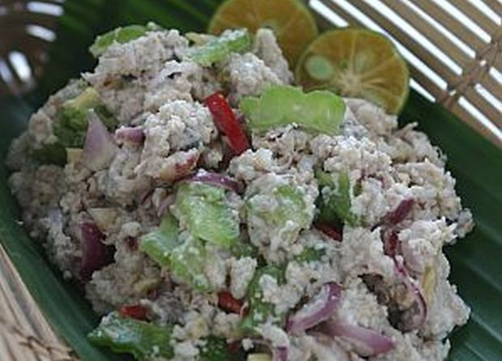

Fish Hinava (Raw Fish Salad)
.
Ingredients
- 600g raw tuna or mackeral (tenggiri), finely sliced
- 125ml lime juice
- 1/2 teaspoon salt, or to taste
- 200g bitter gourd, halved, seeded and finely silced
- 50g ginger, cut into fine strips
- 100g shallots, peeled and finely sliced
- 8 bird's eye chillies, finely sliced
- 4 tablespoons dried grated bambangan seed
Steps
- Combine the fish slices with the lime juice and salt in a mixing bowl.
- Using your fingers, work the mixture well.
- Set aside to marinate for 10 minutes, preferrably in the refrigerator.
- Add the rest of the ingredients.
- Toss well and serve.